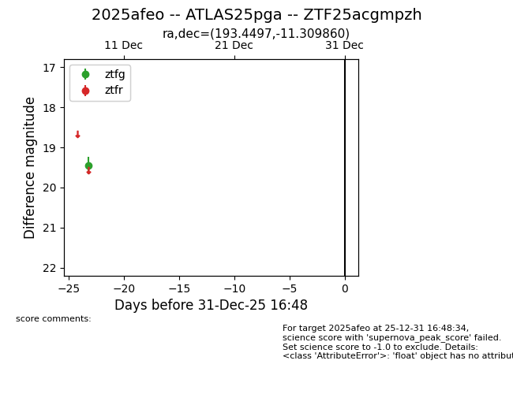
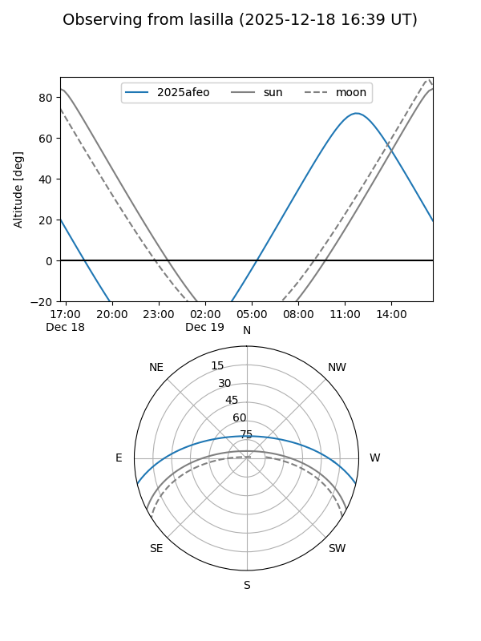
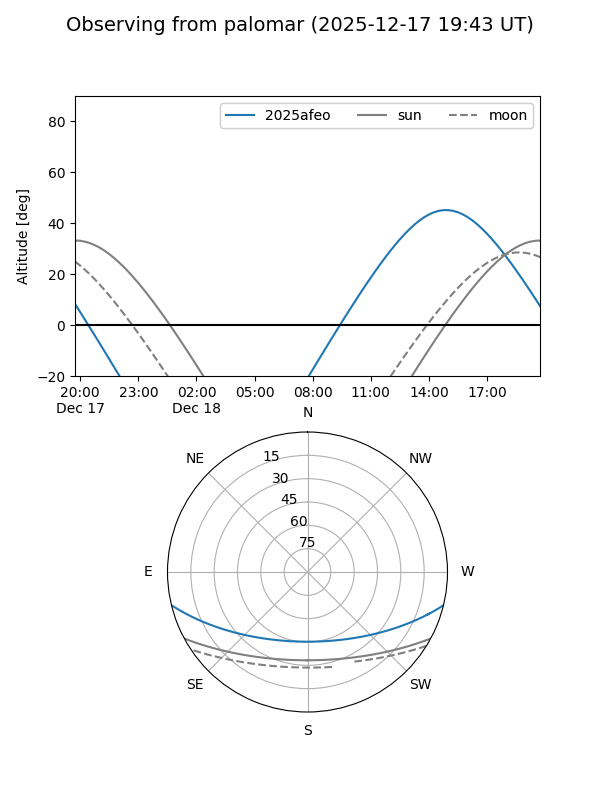

2025afeo
Target 2025afeo at 2025-12-31 16:59
Aliases and brokers:
FINK:
Lasair:
ALeRCE:
TNS:
YSE:
alt names
ZTF25acgmpzh (ztf,fink_ztf)
2025afeo (tns,yse)
ATLAS25pga (atlas)
Coordinates:
equatorial (ra, dec) = 193.4497,-11.30986
equatorial (HMS+DMS) = 12:53:47.92,-11:18:35.50
galactic (l, b) = (303.8628,+51.55762)
Flags:
Photometry:
last ztfg=19.45
1 ztfg detections
Lightcurve

Visibility


Additional plots